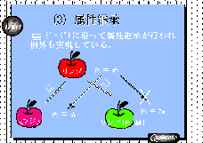

<html>
<head>
<title> Slide No.11 </title>
</head>

<frameset rows="430,130">

<noframes>
<body>
<a href="GIF/slide11.GIF"></a>

<a href="AU/voice11.au">
	</a>[299K]<p>
<!--		-->
次に、<b> Quixote </b> の３番目の特徴として、
<a href=""> 属性継承 </a> を説明します。<p>

<b> Quixote </b> では、先ほど説明しました包摂関係に沿って属性の継承が
起きます。<p>

例えば、「フジはリンゴである」場合は、「色は赤」
という属性は、フジに自動的に継承されます。<p>

しかし、OHP の緑のりんごのところに書かれている複合オブジェクト項の場合、
これは「青りんご」を表していて、継承は起きません。
なぜなら、青りんごの色が緑でなくなったら、青りんごではなくなって
しまうからです。
<p>
<!--		-->

<hr>
<a href="slide12.html" target="_top">次の OHP へ</a>
<br><br>
<a href="slide10.html" target="_top">前の OHP へ</a>
<br><br>
<a href="HomePage.html" target="_top">OHP の一覧へ</a>
</body>
</noframes>

<frame src="onlyslide11.html">
<frame src="buttonexpla11.html">

</frameset>

</html>
